Modèles statistiques, paramètres et estimateurs
4 septembre 2018
Statistiques, paramètres et estimateurs
Statistiques, paramètres et estimateurs
Une statistique est une quantité calculée à partir d’observations de variables aléatoires.
Un paramètre est une quantité qui apparaît dans un modèle statistique.
Un estimateur est une statistique qui vise à estimer un paramètre.
Exemple
Si on mesure le poids de écureuils roux et qu’on fait la moyenne de ces mesures (une statistique), quel est notre estimé du poids moyen de la population locale d’écureuils roux (un paramètre)? Quelle est sa marge d’erreur?
Dans la deuxième partie du cours d’aujourd’hui, nous verrons comment définir la précision d’un estimateur.
Tout d’abord, nous allons revoir plusieurs notions de base sur les distributions statistiques, et particulièrement la distribution normale.
Objectifs de ce cours
Distributions statistiques
Décrire les caractéristiques et l’utilité des distributions normale et log-normale.
Connaître la relation entre densité de probabilité et probabilité cumulative pour une variable continue, et calculer ces quantités dans R.
Comparer des données à une distribution de référence avec un diagramme quantile-quantile.
Objectifs de ce cours
Estimation de paramètres
Estimer la moyenne et la variance d’une population à partir d’un échantillon.
Définir le biais et l’erreur-type d’un estimateur.
Calculer les propriétés d’un estimateur en simulant l’échantillonnage.
Interpréter un intervalle de confiance et calculer l’intervalle de confiance pour la moyenne d’une distribution normale.
Distributions statistiques
Distributions discrètes
Distribution statistique (ou loi de probabilité): fonction qui associe une probabilité à chaque valeur possible d’une variable aléatoire.
Pour une variable discrète, chaque valeur a une masse de probabilité, dont la somme doit être égale à 1.
Distributions discrètes
Exemple: Lancer un dé équilibré à six faces.
- Une distribution uniforme assigne la même probabilité à chaque valeur.
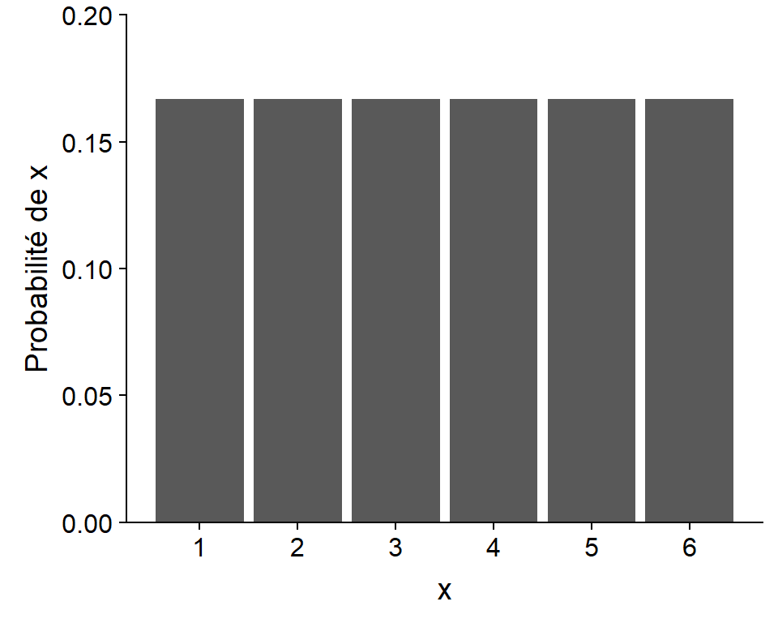
Distribution continue
- Pour une variable continue, chaque valeur a une densité de probabilité.
- Voici une distribution uniforme continue entre 0 et 6.

Distribution continue
Pour calculer la probabilité d’un intervalle donné, on calcule l’intégrale (aire sous la courbe) de la densité.
Ex.: Probabilté que \(x\) soit dans l’intervalle (2.5, 3) est 1/12.
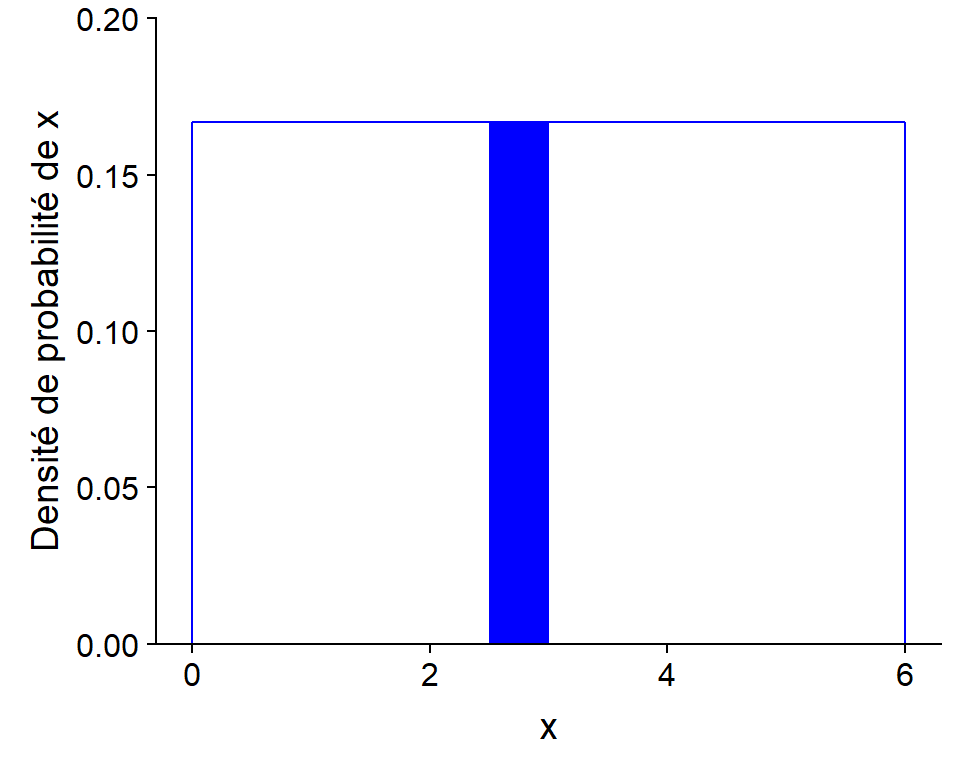
La distribution normale
Motivation
Code R pour générer une valeur de la distribution uniforme entre 0 et 6.
x <- runif(n = 1, min = 0, max = 6)
x## [1] 2.190783Quelle est la distribution de la somme de \(n\) valeurs provenant d’une distribution uniforme?
# Somme de n variables aléatoires uniformes entre min et max
somme_unif <- function(n, min, max) {
sum(runif(n, min, max))
}
n <- 10
x <- replicate(10000, somme_unif(n, 0, 6))Distribution d’une somme de \(n\) variables
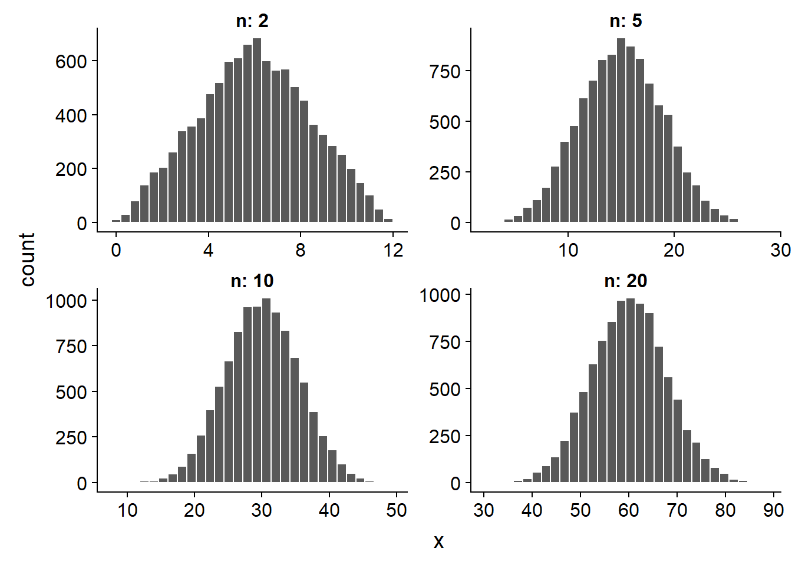
Loi des grands nombres
Nous avons illustré la distribution d’une variable en simulant un échantillon (10 000 valeurs).
Loi des grands nombres: Plus un échantillon aléatoire est grand, plus la distribution des valeurs s’approche de la distribution théorique.
Théorème de la limite centrale
Si on additionne un grand nombre de variables aléatoires indépendantes, peu importe leur distribution, la distribution de la somme s’approche d’une distribution normale.*
* Certaines conditions s’appliquent.
Distribution normale (ou gaussienne)
Formule pour la densité de probabilité:
\[f(x) = \frac{1}{\sigma \sqrt{2 \pi}} e^{-\frac{1}{2} \left( \frac{x - \mu}{\sigma} \right)^2}\]
Deux paramètres: \(\mu\) (moyenne) et \(\sigma\) (écart-type).
Distribution normale
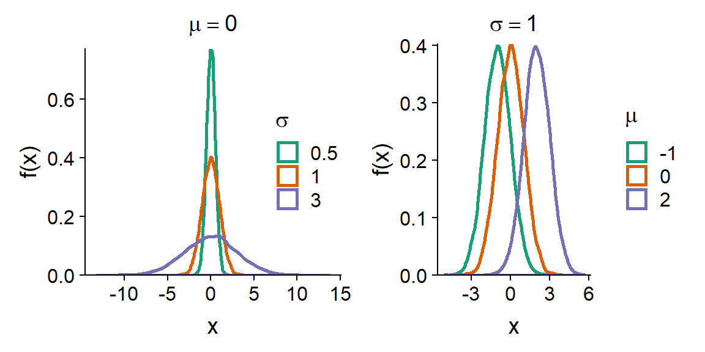
Distribution normale centrée réduite
- Si \(x\) suit une distribution normale avec comme paramètres \(\mu\), \(\sigma\).
\[z = \frac{x - \mu}{\sigma}\]
- Alors \(z\) suit une distribution normale centrée réduite (\(\mu\) = 0, \(\sigma\) = 1):
\[f(z) = \frac{1}{\sqrt{2 \pi}} e^{-\frac{1}{2} z^2}\]
Distribution cumulative
La distribution cumulative d’une variable aléatoire (aussi appelée fonction de répartition) correspond pour chaque valeur \(x\) à la probabilité que la valeur de la variable soit inférieure ou égale à \(x\).
Elle est donc égale à l’aire sous la courbe de la densité de probabilité à gauche de \(x\).
Distribution cumulative
Distribution cumulative \(F(z)\) d’une variable normale centrée réduite

Distribution cumulative
- La distribution cumulative d’une variable aléatoire (aussi appelée fonction de répartition) correspond pour chaque valeur \(x\) à la probabilité que la valeur de la variable soit inférieure ou égale à \(x\).
- Elle est donc égale à l’aire sous la courbe de la densité de probabilité à gauche de \(x\).
- À partir de la distribution cumulative \(F(x)\), on peut facilement calculer la probabilité dans un intervalle (\(x_1\), \(x_2\)) en faisant la soustraction \(F(x_2)\) - \(F(x_1)\).
Fonctions de distribution dans R
Quatre fonctions dans R permettent de travailler avec la distribution normale:
rnorm(n, mean, sd)génèrenvaleurs aléatoires à partir d’une distribution normale avec de moyennemeanet d’écart-typesd.dnorm(x, mean, sd)donne la densité de probabilité associée à la valeurx.pnorm(q, mean, sd)donne la probabilité cumulative associée à une valeurq.qnorm(p, mean, sd)donne la valeur (qpour quantile) associé à une probabilité cumulativepdonnée.
Fonctions de distribution dans R: Exemples
La probabilité cumulative à 2 écarts-type est de 98%.
pnorm(2, mean = 0, sd = 1)## [1] 0.9772499La probabilité d’être à \(\pm\) 1 écart-type de la moyenne est de 68%.
pnorm(1, mean = 0, sd = 1) - pnorm(-1, mean = 0, sd = 1)## [1] 0.6826895Le troisième quartile est à 0.67 écart-type au-dessus de la moyenne.
qnorm(0.75, mean = 0, sd = 1)## [1] 0.6744898Diagramme quantile-quantile
Le diagramme quantile-quantile (Q-Q plot) sert à visualiser la correspondance entre deux distributions statistiques.
Le plus souvent, nous voulons comparer un échantillon à une distribution théorique donnée.
Dans ce cas, on place les observations en ordre croissant et on associe chaque observation au quantile correspondant de la distribution théorique.
Diagramme quantile-quantile
Fonctions qqnorm et qqline dans R
test <- rnorm(99, mean = 6, sd = 4)
qqnorm(test)
qqline(test)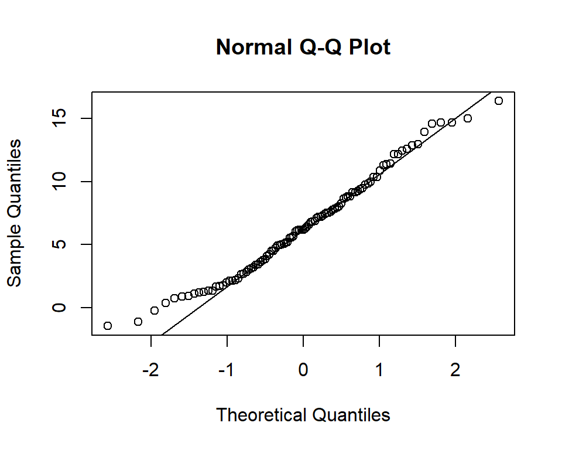
Histogramme du DHP pour les arbres de Kejimkujik
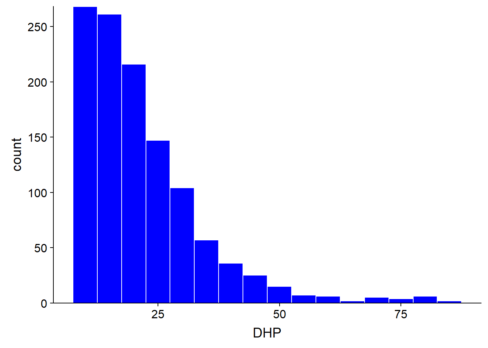
Diagramme quantile-quantile

La distribution log-normale
Distribution log-normale
Une variable \(x\) suit une distribution log-normale si \(y = log(x)\) suit une distribution normale.
Équivalent: si \(y\) suit une distribution normale, \(x = e^y\) suit une distribution log-normale.
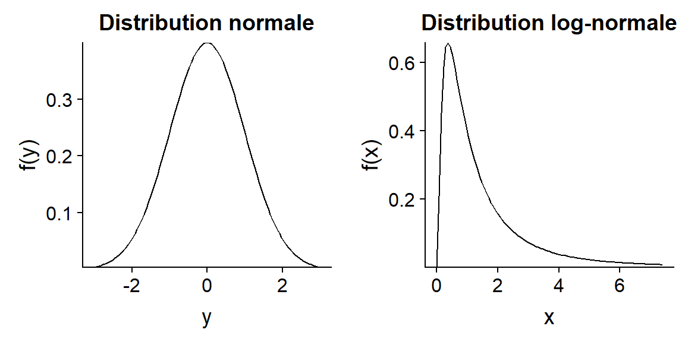
Propriétés des logarithmes
\(log(x)\) est seulement défini pour \(x > 0\).
\(log(x) = 0\) si \(x = 1\). Un logarithme négatif ou positif représente une valeur de \(x\) inférieure ou supérieure à 1, respectivement.
- Le logarithme transforme les multiplications en additions et les divisions en soustractions.
- \(log(xw) = log(x) + log(w)\)
- \(log(x/v) = log(x) - log(v)\)
Donc, dans une échelle logarithmique, la distance entre deux nombres est proportionnelle à leur ratio dans l’échelle originale.
Propriétés des logarithmes
- Si nous ne spécifions pas, les logarithmes sont des logarithmes naturels (base \(e\)). Toutefois, un changement de base correspond seulement à un changement d’échelle et n’affecte pas la forme de la distribution. Par exemple, pour convertir en base 10:
\[log_{10}(x) = \frac{log(x)}{log(10)}\]
Utilité de la distribution log-normale
Si la distribution normale est associée à des processus additifs, la distribution log-normale est associée à des processus multiplicatifs.
- Exemple: Une population croît de 5%, 10% et 3% lors de trois années consécutives.
- La croissance totale est 1.05 x 1.10 x 1.03 = 1.19.
Diagramme quantile-quantile pour log(DHP)

Transformation logarithmique
La plupart des méthodes vues dans ce cours sont basées sur la distribution normale.
Transformation logarithmique: convertit une variable log-normale en variable normale.
Attention à l’interprétation des résultats.
Transformation logarithmique
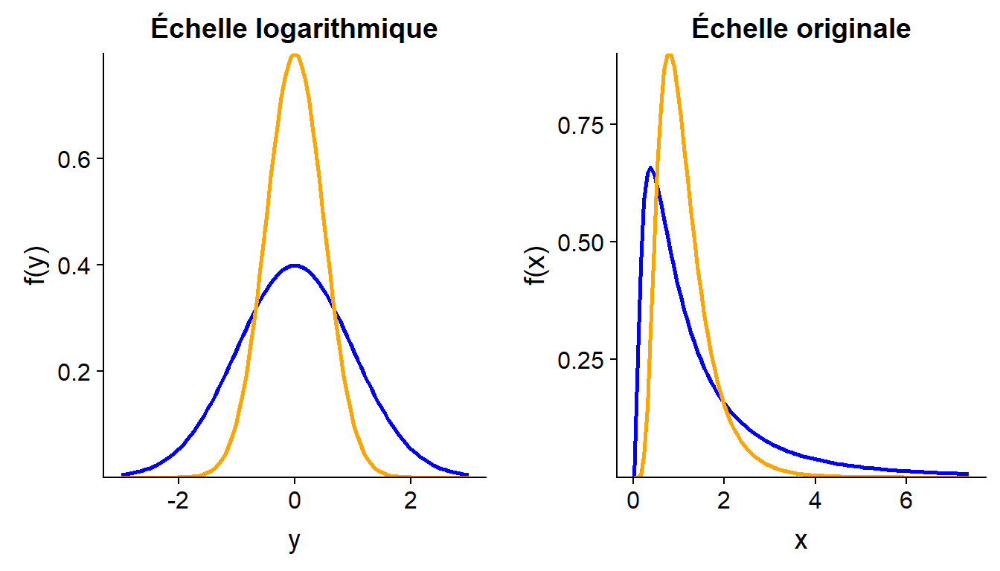
- La moyenne de \(log(x)\) n’est pas égale au logarithme de la moyenne de \(x\).
Résumé
Une distribution discrète est représenté par une fonction de masse de probabilité; une distribution continue est représentée par une fonction de densité de probabilité.
La distribution cumulative d’une variable au point \(x\) donne la probabilité que cette variable soit inférieure ou égale à \(x\).
Quelques distributions continues: uniforme, normale, log-normale.
Résumé
La distribution normale est caractérisée par sa moyenne \(\mu\) et son écart-type \(\sigma\).
Toute distribution normale peut être ramenée à la distribution normale centrée réduite (\(\mu\) = 0, \(\sigma\) = 1) avec la transformation linéaire: \(z = (x - \mu)/\sigma\).
La transformation logarithmique convertit les effets multiplicatifs en effets additifs, et les distributions log-normales en distributions normales.
Le diagramme quantile-quantile permet de comparer visuellement des données à une distribution de référence.
Estimation de paramètres
Estimation de la moyenne
- On mesure une variable \(x\) sur un échantillon aléatoire de taille \(n\).
- \(x\) ne suit pas nécessairement une distribution normale.
- La moyenne de l’échantillon est une estimateur de \(\mu\), la moyenne de la population.
\[\bar{x} = \frac{1}{n} \sum_{i = 1}^{n} x_i\]
Simulation d’échantillonnage
Imaginons que les 1161 arbres du tableau de données Kejimkujik (vecteur dhp) représentent la population entière, et que nous échantillonnons une partie de ces arbres.
## [1] "La population a un DHP moyen de 21.76 cm avec un écart-type de 12.25 cm."Dans R, la fonction sample sert à tirer un échantillon aléatoire des éléments d’un vecteur.
mean(sample(dhp, 20)) # moyenne d'un échantillon de n = 20 arbres## [1] 22.7- Simulons 10 000 échantillons pour différentes valeurs de \(n\).
Simulation d’échantillonnage
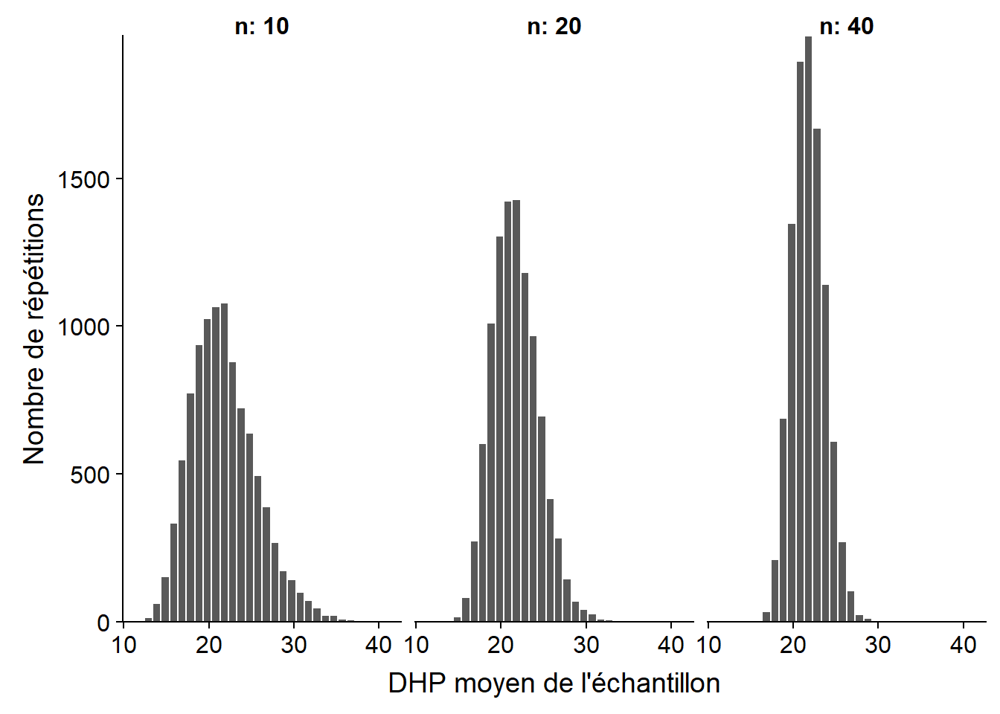
Erreur-type de la moyenne
- Prenons une variable \(x\) dont la distribution a une moyenne \(\mu\) et une variance \(\sigma^2\).
- On peut démontrer que \(\bar{x}\) a une moyenne égale à \(\mu\) et une variance égale à \(\sigma^2 / n\).
- L’écart-type de \(\bar{x}\), qui dans ce contexte se nomme l’erreur-type (standard error), est donc inversement proportionnel à la racine carrée de \(n\):
\[\sigma_{\bar{x}} = \frac{\sigma_{x}}{\sqrt{n}}\]
Erreur-type de la moyenne
Moyenne et erreur-type de \(\bar{x}\) calculées à partir des 10 000 échantillons.
| n | Moyenne (cm) | Erreur-type (cm) | \(\sigma / \sqrt{n}\) |
|---|---|---|---|
| 10 | 21.76 | 3.85 | 3.87 |
| 20 | 21.81 | 2.75 | 2.74 |
| 40 | 21.78 | 1.91 | 1.94 |
La moyenne de l’estimateur correspond à la valeur du paramètre estimé (\(\mu\)), donc \(\bar{x}\) est un estimateur non-biaisé de \(\mu\).
Écart-type ou erreur-type
Écart-type de \(x\): mesure la dispersion des valeurs individuelles par rapport à la moyenne.
Erreur-type de \(\bar{x}\): mesure la dispersion de la moyenne d’un échantillon.
Diminue avec la taille de l’échantillon.
Ne dépend pas de la taille de la population (sauf si l’échantillon s’en approche).
Dépendance de l’erreur-type sur \(n\)
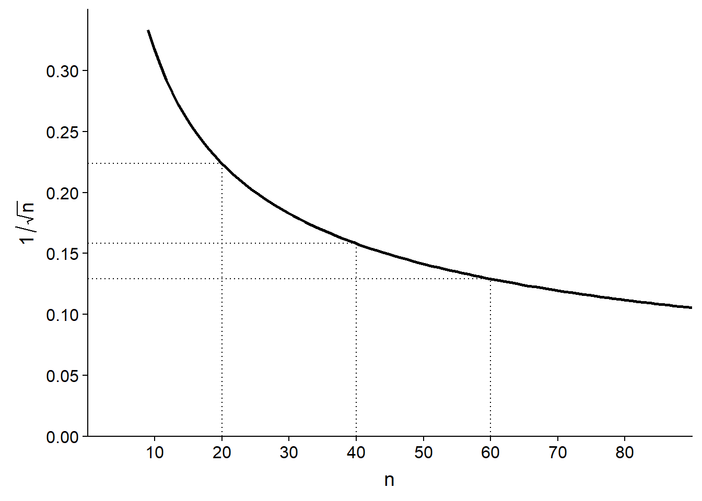
Estimation de la variance
\(s^2\) est-il est un bon estimateur de la variance \(\sigma^2\)?
\[s^2 = \frac{1}{n} \sum_{i = 1}^n \left( x_i - \bar{x} \right)^2 \]
- Comme plus tôt, simulons 10 000 échantillons du vecteur
dhpavec différentes valeurs de \(n\).
Estimation de la variance
Moyenne de \(s^2\) et son ratio avec la valeur de \(\sigma^2\) pour la population (150.1 cm\(^2\)).
| n | Moyenne de \(s^2\) (cm\(^2\)) | Moyenne de \(s^2\) / \(\sigma^2\) |
|---|---|---|
| 10 | 136.3 | 0.90 |
| 20 | 143.1 | 0.95 |
| 40 | 146.6 | 0.97 |
- L’estimateur \(s^2\) est biaisé, sous-estime systématiquement la variance.
Estimation de la variance
- L’estimateur est basé sur la moyenne de l’échantillon \(\bar{x}\) plutôt que \(\mu\).
- La sous-estimation correspond exactement au ratio \((n - 1)/n\) et peut donc être corrigée en multiplant \(s^2\) par \(n/(n-1)\).
\[s^2 = \frac{1}{n - 1} \sum_{i = 1}^n \left( x_i - \bar{x} \right)^2\]
Estimation de l’écart-type
- Pour l’écart-type, on prend la racine carrée de \(s^2\).
\[s = \sqrt{\frac{1}{n - 1} \sum_{i = 1}^n \left( x_i - \bar{x} \right)^2}\]
- Contrairement à \(s^2\), cet estimateur est biaisé, mais on l’utilise quand même.
- Cet estimateur est aussi utilisé pour obtenir l’erreur-type de \(\bar{x}\) (égale à \(s / \sqrt{n})\).
Biais et erreur-type d’un estimateur
- Contexte: On estime un paramètre \(\theta\) avec l’estimateur \(\hat{\theta}\).
- L’erreur carrée moyenne correspond à la moyenne des écarts entre l’estimateur et le paramètre. Elle se divise en deux parties.
\[ E[(\hat{\theta} - \theta)^2] = E[(\hat{\theta} - E[\hat{\theta}])^2] + (E[\hat{\theta}] - \theta)^2 \]
- Le premier terme à droite est la variance de l’estimateur (le carré de l’erreur-type).
- Le deuxième terme est le carré du biais.
Biais et erreur-type d’un estimateur
L’erreur-type est due à la taille limitée de l’échantillon et diminue lorsque \(n\) augmente.
Le biais est une erreur systématique qui ne dépend pas de la taille de l’échantillon, mais peut être dû à un estimateur biaisé où à un échantillonnage non représentatif de la population.
Intervalle de confiance
Estimateur normalement distribué
- Supposons que \(\bar{x}\) suit une distribution normale: soit \(x\) suit une distribution normale, soit l’échantillon est assez grand pour que le théorème de la limite centrale s’applique.
- Définissons une variable normale centrée réduite \(z\):
\[ z = \frac{\bar{x} - \mu}{\sigma / \sqrt{n}} \]
Intervalle de probabilité déterminée
- Exemple: l’intervalle entre le premier quartile (25%) et le troisième quartile (75%) a une probabilité de 50%.
- Pour une variable normale centrée réduite, cet intervalle correspond à (-0.674, 0.674).
c(qnorm(0.25), qnorm(0.75))## [1] -0.6744898 0.6744898Intervalle de probabilité déterminée
Convertissons cet intervalle de \(z\) en intervalle de \(\bar{x}\):
\[ \left( -0.674 \le \frac{\bar{x} - \mu}{\sigma / \sqrt{n}} \le 0.674 \right)\]
\[ \left( - 0.674 \frac{\sigma}{\sqrt{n}} \le \bar{x} - \mu \le 0.674 \frac{\sigma}{\sqrt{n}} \right)\]
La probabilité que \(\bar{x}\) se trouve à \(\pm\) 0.674 erreur-type de \(\mu\) est égale à 50%.
Intervalle de probabilité déterminée
- Définissons \(z_p\) comme la valeur de \(z\) correspondant à une probabilité cumulative \(p\). Ex.: \(z_{0.25}\) est le premier quartile. Alors l’intervalle contenant 50% de la probabilité s’écrit:
\[ \left( z_{0.25} \frac{\sigma}{\sqrt{n}} \le \bar{x} - \mu \le z_{0.75} \frac{\sigma}{\sqrt{n}} \right)\]
Intervalle de probabilité déterminée
- Pour un intervalle avec probabilité de 90%, on exclut 5% de chaque côté (\(z_{0.05}\) et \(z_{0.95}\)).
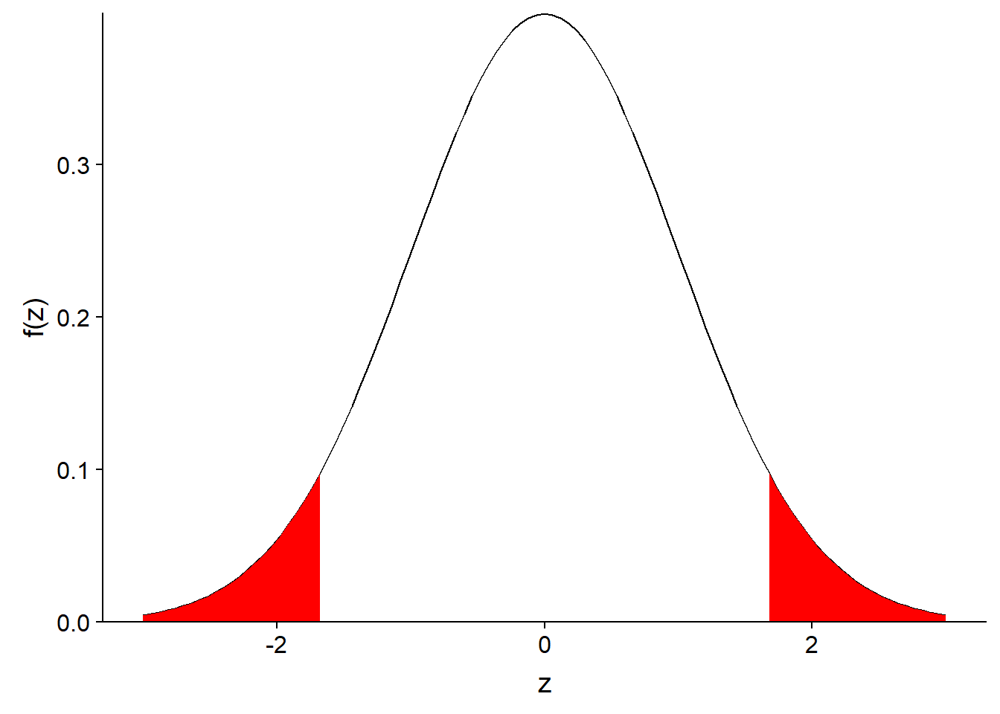
Intervalle de probabilité déterminée
- De façon générale, si \(\alpha\) est la probabilité exclue, l’intervalle contenant (100% - \(\alpha\)) de la distribution de \(\bar{x}\) correspond à:
\[ \left( z_{\alpha/2} \frac{\sigma}{\sqrt{n}} \le \bar{x} - \mu \le z_{1-\alpha/2} \frac{\sigma}{\sqrt{n}} \right)\]
Intervalle de probabilité déterminée
- Pour des raisons historiques, l’intervalle de 95% correspondant à \(\alpha\) = 0.05 est le plus souvent utilisé:
\[ \left( z_{0.025} \frac{\sigma}{\sqrt{n}} \le \bar{x} - \mu \le z_{0.975} \frac{\sigma}{\sqrt{n}} \right)\]
- En remplaçant les quantiles par leur valeur, on obtient:
\[ \left(- 1.96 \frac{\sigma}{\sqrt{n}} \le \bar{x} - \mu \le 1.96 \frac{\sigma}{\sqrt{n}} \right)\]
Intervalle de confiance
- Si on calcule la moyenne \(\bar{x}\) d’un échantillon (et que \(\bar{x}\) suit une distribution normale), la probabilité que notre estimé \(\bar{x}\) se trouve à \(\pm\) 1.96 erreurs-type du paramètre \(\mu\) est de 95%.
- Après avoir calculé \(\bar{x}\) et ainsi que l’erreur-type, nous établissons un intervalle de 1.96 erreurs-type autour de \(\bar{x}\):
\[ \left(\bar{x} - 1.96 \frac{\sigma}{\sqrt{n}}, \bar{x} + 1.96 \frac{\sigma}{\sqrt{n}} \right)\] >- Selon ce modèle, pour 95% des échantillons possibles de \(x\), l’intervalle ainsi calculé contiendra la valeur de \(\mu\).
- Il s’agit donc d’un intervalle de confiance à 95% pour \(\bar{x}\).
Interprétation de l’intervalle de confiance
La probabilité associée à un intervalle de confiance est basée sur la variabilité de \(\bar{x}\) d’un échantillon à l’autre. Elle constitue une probabilité a priori (avant d’avoir échantillonné).
Le paramètre \(\mu\) est fixe. Une fois que l’estimé \(\bar{x}\) est obtenu pour un échantillon donné, l’intervalle de confiance contient \(\mu\) ou ne le contient pas.
En particulier, lorsqu’on obtient un intervalle de confiance pour un échantillon donné, il est incorrect d’affirmer que “le paramètre \(\mu\) a 95% de probabilité d’être à l’intérieur de cet intervalle”.
Intervalle de confiance d’une moyenne
- L’intervalle de confiance à (100% - \(\alpha\)) de la moyenne \(\bar{x}\) est donné par:
\[ \left( \bar{x} + z_{\alpha/2} \frac{\sigma}{\sqrt{n}}, \bar{x} + z_{1 - \alpha/2} \frac{\sigma}{\sqrt{n}} \right)\]
- En pratique, on ne connaît pas \(\sigma\).
- Si on remplace \(\sigma\) par son estimé \(s\), la probabilité de l’intervalle devient inférieure à (100% - \(\alpha\)).
- Il faut donc élargir l’intervalle afin de compenser pour la connaissance imparfaite de l’écart-type.
Distribution \(t\) de Student
La solution de ce problème a été découverte par William Gosset, qui l’a publié sous le pseudonyme de Student.
Lorsqu’on utilise un estimé de l’écart-type, l’intervalle de confiance n’est plus basé sur la distribution normale centrée réduite \(z\), mais plutôt sur la distribution \(t\).
La distribution \(t\) comporte un paramètre, le nombre de degrés de liberté, égal ici à \(n\) - 1.
Intervalle de confiance d’une moyenne
- La version corrigée de l’intervalle de confiance à (100% - \(\alpha\)) pour \(\bar{x}\) est:
\[ \left( \bar{x} + t_{(n-1)\alpha/2} \frac{s}{\sqrt{n}}, \bar{x} + t_{(n-1)1 - \alpha/2} \frac{s}{\sqrt{n}} \right)\]
- Plus \(n\) est petit, plus la différence entre la distribution \(t\) et la distribution normale centrée réduite \(z\) est importante.
Résumé
Un estimateur est biaisé lorsque sa moyenne sur l’ensemble des échantillons possibles diffère de la valeur du paramètre à estimer.
L’erreur-type mesure la dispersion d’un estimateur d’un échantillon à l’autre, elle diminue avec la taille de l’échantillon.
Un intervalle de confiance est défini autour d’un estimé de manière à ce que sur l’ensemble des échantillons possibles, il y ait une probabilité spécifique que l’intervalle de confiance obtenu contienne la valeur du paramètre à estimer.